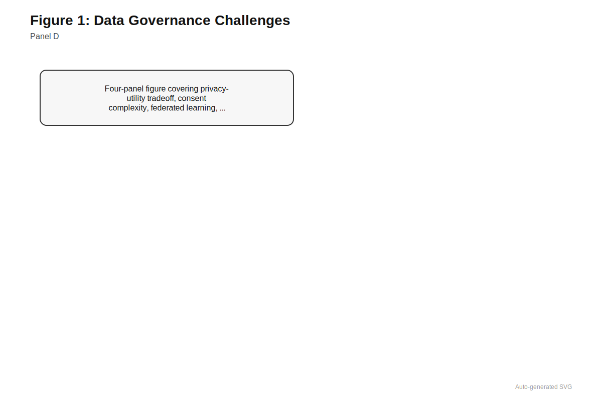

26 Regulatory and Governance
Whose genome trained the model that now classifies your variant?
Estimated reading time: 30-40 minutes
Prerequisites: This chapter builds on concepts from Chapter 12 (data leakage and validation pitfalls), Chapter 23 (uncertainty quantification), and Section 24.1 (interpretability methods). Familiarity with variant effect prediction (?sec-ch14-protein-vep) and clinical genomics applications (?sec-ch27-clinical) will enhance understanding of regulatory context.
Learning Objectives: After completing this chapter, you should be able to:
- Explain how regulatory agencies classify genomic AI tools and what evidence they require for approval
- Compare FDA, EU MDR, and other jurisdictional approaches to AI-based medical devices
- Evaluate consent frameworks and their adequacy for foundation model training data
- Analyze privacy risks specific to genomic data and assess technical mitigation strategies
- Assess dual-use concerns for generative genomic models and appropriate governance responses
- Apply principles of responsible AI development to genomic foundation model projects
Why This Matters: A variant classifier achieving 0.95 auROC on benchmarks means nothing if regulatory barriers prevent its clinical use, if patients cannot trust how their data is used, or if the same capabilities enable biosecurity threats. This chapter bridges the gap between technical achievement and responsible deployment.
The first genomic foundation model to receive U.S. Food and Drug Administration (FDA) clearance as a medical device will face a peculiar regulatory challenge: demonstrating that a system trained on millions of sequences from research biobanks, academic databases, and public repositories can safely inform clinical decisions for individual patients who never consented to such use. Clinical-grade variant interpretation tools already incorporate deep learning predictions, yet the regulatory frameworks governing their deployment were designed for deterministic software with traceable decision logic, not for neural networks whose internal representations resist simple explanation. As of 2024, more than 500 AI-enabled medical devices have received FDA authorization, but fewer than a dozen involve genomic interpretation, and none yet deploys a foundation model at scale (Health 2025). The gap between technical capability and regulatory readiness defines one of the central tensions facing the field.
This asymmetry between what models can do in silico and what they may do in clinical practice shapes every translational decision. A variant effect predictor achieving 0.95 area under the receiver operating characteristic curve (auROC) on a curated benchmark may fail unpredictably on the rare variants that matter most for diagnosis. A regulatory sequence model that accurately predicts chromatin accessibility in well-characterized cell lines may produce unreliable predictions in patient-derived tissues never seen during training. Technical achievements in genomic deep learning represent necessary but insufficient conditions for clinical impact. Realizing the benefits of genomic foundation models while managing their risks requires navigating regulatory pathways designed for different technologies, building governance structures for data that spans generations and continents, and confronting ethical questions that genomics and artificial intelligence raise independently but compound when combined.
26.1 Regulatory Frameworks for Genomic AI
Genomic foundation models exist in regulatory limbo. They are clearly software, sometimes medical devices, occasionally laboratory-developed tests, and frequently components of larger systems that span multiple regulatory categories. If you are familiar with drug approval, the parallels help: just as a new pharmaceutical must prove safety in Phase I, efficacy in Phase II/III, and demonstrate manufacturing quality before reaching patients, medical AI must demonstrate analytical validity (does it measure what it claims?), clinical validity (do measurements correlate with outcomes?), and appropriate quality systems. The difference is that drugs have well-worn regulatory pathways developed over a century, while AI-based medical devices navigate frameworks designed for deterministic software with traceable decision logic, not for neural networks that learn from data, evolve through fine-tuning, and produce outputs that even their developers cannot fully predict.
Navigating this landscape requires understanding how different jurisdictions approach AI-based medical software, what evidence they require, and where genomic applications create novel challenges that existing pathways did not anticipate.
26.1.1 Software as Medical Device Paradigm
Regulatory agencies worldwide classify AI-based clinical tools as software as a medical device (SaMD), a category that applies when software itself constitutes the medical device rather than merely controlling hardware. The International Medical Device Regulators Forum defines SaMD risk tiers based on the seriousness of the health condition and the role software plays in clinical decision-making: software that provides information to drive clinical management of a serious condition receives higher scrutiny than software that merely informs decisions about non-serious conditions (“Software as a Medical Device: Possible Framework for Risk Categorization and Corresponding Considerations International Medical Device Regulators Forum” 2014).
Consider a foundation model that classifies germline variants as pathogenic or benign for hereditary cancer syndromes. How would it be classified under the SaMD framework?
Step 1: Assess condition seriousness. Hereditary breast and ovarian cancer syndrome (BRCA1/2) is a serious condition: pathogenic variants confer 45-85% lifetime breast cancer risk and 10-45% ovarian cancer risk. This places the condition in the “serious” category.
Step 2: Assess decision role. The classifier directly informs diagnostic conclusions and treatment decisions (e.g., risk-reducing surgery, enhanced screening). This is “drive clinical management” rather than merely “inform.”
Step 3: Determine risk tier. Serious condition + drive management = highest risk category (Class III in FDA terms, Class IIb/III in EU MDR).
Regulatory consequence: This variant classifier would require a Pre-Market Approval (PMA) submission to FDA (not the faster 510(k) pathway), including clinical validation data demonstrating performance across ancestry groups, comparison to expert panel classifications, and evidence of clinical utility.
In contrast, a model that provides supplementary information about variant population frequency (for physician consideration alongside other evidence) might qualify for a lower risk tier and faster regulatory pathway.

Why this two-dimensional risk framework (condition severity times decision role)? The logic is that harm potential increases along both axes: misclassifying a benign skin lesion causes less harm than misclassifying a malignant tumor, and software that merely displays information for physician interpretation poses less risk than software that autonomously makes treatment decisions. By considering both dimensions, regulators can calibrate evidentiary requirements proportionally—demanding rigorous clinical trials for high-risk applications while enabling faster pathways for lower-risk tools.
Before reading further, consider: What makes a genomic variant classifier different from, say, a radiology AI that identifies tumors in CT scans? Both inform clinical decisions about serious conditions. What unique challenges might genomic AI face that imaging AI does not?
Genomic foundation models typically fall into higher-risk categories. A tool that classifies variants as pathogenic or benign directly influences diagnostic conclusions for conditions ranging from hereditary cancer syndromes to rare developmental disorders. The consequences of misclassification can be severe: a false negative may delay life-saving interventions, while a false positive may trigger unnecessary prophylactic surgery or cascade into family-wide psychological harm. Regulators accordingly require substantial evidence across the ACCE framework: analytical validity (does the model measure what it claims to measure?), clinical validity (does measurement correlate with the clinical outcome?), and in some cases clinical utility (does using the model improve patient outcomes?) (“ACCE Model Process for Evaluating Genetic Tests CDC” 2004).
The FDA’s approach to AI-enabled devices has evolved considerably since the first autonomous diagnostic AI received FDA clearance in 2018 (Abràmoff et al. 2018). The agency now distinguishes between “locked” algorithms whose behavior is fixed at approval and “adaptive” algorithms that continue learning from new data after deployment (Administration 2021). Most foundation models fall into neither category cleanly: their weights are frozen after pretraining, but their outputs depend on prompts, fine-tuning, or downstream heads that may change across applications. This architectural ambiguity creates regulatory uncertainty. A foundation model serving as the backbone for multiple clinical applications might require separate submissions for each use case, or a single submission might cover the shared backbone while individual fine-tuned heads receive separate clearances.
Foundation models challenge the FDA’s locked/adaptive dichotomy. A model with frozen pretrained weights appears “locked,” but fine-tuning for specific clinical applications, prompt engineering, and evolving downstream heads create “adaptive” behavior in practice. This architectural flexibility—a technical strength—becomes a regulatory liability when approval pathways assume static behavior.
26.1.2 European and Global Regulatory Landscapes
The European Union’s approach differs from the FDA’s in several respects relevant to genomic AI. The EU Medical Device Regulation (MDR), which fully replaced prior directives in 2021, classifies standalone software according to similar risk principles but places greater emphasis on conformity assessment by notified bodies rather than centralized agency review (“Regulation (EU) 2017/745 of the European Parliament and of the Council of 5 April 2017 on Medical Devices, Amending Directive 2001/83/EC, Regulation (EC) No 178/2002 and Regulation (EC) No 1223/2009 and Repealing Council Directives 90/385/EEC and 93/42/EEC (Text with EEA Relevance. )” 2017). For high-risk software, manufacturers must demonstrate compliance with essential safety and performance requirements through technical documentation, quality management systems, and post-market surveillance plans. The AI Act, which entered force in 2024, adds another regulatory layer: high-risk AI systems (including those used in medical diagnosis) must meet transparency, robustness, and human oversight requirements that go beyond device-specific regulations (“Regulation (EU) 2024/1689 of the European Parliament and of the Council of 13 June 2024 Laying down Harmonised Rules on Artificial Intelligence and Amending Regulations (EC) No 300/2008, (EU) No 167/2013, (EU) No 168/2013, (EU) 2018/858, (EU) 2018/1139 and (EU) 2019/2144 and Directives 2014/90/EU, (EU) 2016/797 and (EU) 2020/1828 (Artificial Intelligence Act) (Text with EEA Relevance)” 2024).
Regulatory divergence across jurisdictions creates practical challenges for global deployment. A genomic foundation model cleared by the FDA may require separate CE marking for European markets, TGA approval in Australia, and PMDA review in Japan, each with distinct evidentiary standards and submission formats. Harmonization efforts through the International Medical Device Regulators Forum provide common frameworks for definitions and risk classification, but substantive requirements continue to differ (“Software as a Medical Device (SaMD): Clinical Evaluation International Medical Device Regulators Forum” 2017). Companies developing clinical-grade genomic AI must either design validation programs that satisfy the most stringent jurisdiction or pursue market-by-market strategies that delay access in some regions.
| Dimension | FDA (United States) | EU MDR + AI Act | PMDA (Japan) | TGA (Australia) |
|---|---|---|---|---|
| Primary pathway | 510(k), De Novo, PMA | Conformity assessment via notified body | PMDA review with MHLW approval | Conformity assessment |
| Risk classification | Class I, II, III | Class I, IIa, IIb, III | Class I-IV | Class I, IIa, IIb, III |
| Adaptive AI stance | Predetermined Change Control Plan | Post-market surveillance emphasis | Case-by-case evaluation | Follows IMDRF guidance |
| LDT oversight | Expanding (2024 rule) | Included under IVD Regulation | Laboratory discretion | Limited |
| AI-specific rules | Framework guidance | AI Act (2024) | Soft law guidance | Follows international norms |
| Typical timeline | 6-18 months | 12-24 months | 12-18 months | 6-12 months |
The regulatory landscape for laboratory-developed tests (LDTs) further complicates matters in the United States. Clinical laboratories have historically been able to develop and offer tests under their own validation without FDA premarket review, relying instead on CLIA certification and state licensure. Many clinical genomics laboratories use in-house bioinformatics pipelines, variant callers, and annotation tools that incorporate machine learning components without seeking FDA clearance. Recent FDA guidance signals intent to assert greater oversight over LDTs, particularly those using complex algorithms, but the boundary between regulated devices and unregulated laboratory procedures remains contested (“Medical Devices; Laboratory Developed Tests” 2024).
26.1.3 Validation Requirements for Clinical Genomic AI
Regulatory submissions for genomic AI devices require validation evidence spanning multiple dimensions. Analytical validation typically involves demonstrating that the model performs consistently across different sequencing platforms, library preparation methods, and sample types. For a variant effect predictor, this might include showing that scores remain calibrated when inputs come from whole-genome sequencing versus targeted panels, from fresh blood versus archived FFPE tissue, or from healthy individuals versus cancer patients with complex somatic variation.
The chapter on confounding (Chapter 12) introduced a critical validation pitfall. Can you recall what it is? How might this same pitfall affect regulatory submissions for a variant classifier trained on ClinVar data?
Hint: Think about where training labels come from and how evaluation benchmarks are constructed.
The critical pitfall is circular validation or data leakage—when the same data (or closely related data) appears in both training and evaluation. For ClinVar-trained classifiers, this manifests when variants from the same genes, families, or submissions appear in both train and test sets, inflating performance estimates. Regulatory submissions must demonstrate true held-out validation using variants submitted after model training or from independent databases, not just random splits of the same ClinVar version.
Clinical validation connects model outputs to clinical outcomes. For a variant classifier, clinical validation might assess concordance with expert panel classifications, correlation with functional assay results, or agreement with segregation patterns in affected families. The choice of reference standard is itself contentious: ClinVar classifications, which many models use as training labels, reflect historical expert consensus that may lag behind accumulating evidence, and circular validation using the same database for training and evaluation produces misleadingly optimistic results (see Chapter 12). The deployment realities discussed in Section 27.6.4 and Appendix B illustrate how these validation requirements interact with institutional workflows, reimbursement constraints, and clinician trust; regulatory clearance represents only one barrier among many.
Some regulators also require evidence of clinical utility, demonstrating that model use improves patient outcomes compared to standard practice. This higher bar is difficult to meet for genomic AI tools that operate as components within larger clinical workflows. A variant effect predictor may improve prioritization efficiency without changing ultimate diagnoses, or may enable earlier diagnosis that only translates to better outcomes when appropriate treatments exist. Designing trials that isolate the model’s contribution from confounding workflow factors requires careful attention to study design and endpoint selection.
What would a regulatory submission look like for a variant effect predictor like AlphaMissense seeking FDA clearance as a Class II medical device?
510(k) Submission Components:
Device Description: Software tool that accepts protein-coding variants as input and outputs pathogenicity predictions (0-1 probability) using a deep learning model trained on protein language model embeddings and structural features.
Predicate Device: Reference prior-cleared variant interpretation tools (e.g., approved clinical decision support software that incorporates CADD, REVEL, or similar scores).
Analytical Validation:
- Reproducibility: Same variant queried 100 times produces identical output (deterministic inference)
- Platform independence: Performance verified across cloud (AWS, GCP) and on-premise deployments
- Input robustness: Graceful handling of edge cases (novel amino acids, incomplete transcripts)
Clinical Validation (the critical section):
- Primary endpoint: Concordance with ClinVar expert-reviewed pathogenic/benign classifications (excluding VUS)
- Performance metrics: auROC = 0.91 (95% CI: 0.89-0.93) on 25,847 held-out variants submitted to ClinVar after model training freeze
- Subgroup analysis: Performance stratified by gene family, variant type (missense only), and ancestry of submitting laboratories
- Comparison to predicate: AlphaMissense auROC vs. CADD (0.85), REVEL (0.88) on identical test set
- Temporal validation: Model predictions for variants classified after training (prospective cohort) show no degradation vs. training-era variants
Limitations and Labeling:
- “Not validated for variants in genes without human homologs in training data”
- “Performance may differ for populations underrepresented in ClinVar”
- “Intended as decision support; does not replace expert interpretation”
Post-Market Surveillance Plan: Quarterly performance monitoring against accumulating ClinVar classifications; drift detection triggers.
This example illustrates the gap between research publication (which reports benchmark performance) and regulatory submission (which requires prospective validation, subgroup analysis, explicit comparison to existing tools, and ongoing monitoring commitments).
26.2 Data Governance and Consent
Foundation models require training data at scales that strain every assumption underlying informed consent. A protein language model draws on sequences from millions of organisms. A human genomic model aggregates variants from biobanks across continents, each governed by different consent frameworks, legal regimes, and cultural expectations about data use. The participants who contributed samples a decade ago could not have anticipated that their sequences might train generative AI systems capable of designing novel proteins or predicting sensitive traits. Governing this data requires frameworks that balance scientific utility against individual rights, present uses against unknown future applications, and open science norms against community concerns about exploitation.
26.2.1 Consent Problem at Scale
This section addresses legal and ethical frameworks that vary significantly across jurisdictions and evolve rapidly. The concepts are not technically complex but require careful attention to nuance. What constitutes valid consent in one jurisdiction may be insufficient in another, and best practices continue to evolve.
Foundation model training requires data at scales that challenge traditional consent paradigms. A protein language model trained on UniRef encompasses sequences from millions of organisms, including many species for which consent concepts do not apply and human sequences contributed under varied research protocols. A model trained on human genomic data from multiple biobanks aggregates information collected under different consent frameworks, some permitting broad secondary research use and others restricting use to specific studies.
The legal and ethical status of such aggregated training depends on how consent documents were written, how thoroughly participants understood the scope of future use, and how jurisdictions interpret secondary use provisions. GDPR provisions treat genetic data as a special category requiring explicit consent, but may permit research use under legitimate interest or public interest provisions with appropriate safeguards (“Regulation (EU) 2016/679 of the European Parliament and of the Council of 27 April 2016 on the Protection of Natural Persons with Regard to the Processing of Personal Data and on the Free Movement of Such Data, and Repealing Directive 95/46/EC (General Data Protection Regulation) (Text with EEA Relevance)” 2016). United States regulations under the Common Rule permit secondary research on properly deidentified data, but genomic data resist complete deidentification given the uniqueness of individual genomes (“Federal Policy for the Protection of Human Subjects (’Common Rule” 2009).
Even when consent technically permits model training, broader ethical questions remain. Participants who consented to genomic research in 2005 could not have anticipated that their data might train AI systems capable of generating novel sequences or predicting sensitive traits. The temporal gap between data collection and model development strains the fiction of informed consent. Dynamic consent systems that allow ongoing engagement and preference updates address some concerns but are difficult to retrofit onto legacy collections and impose burdens on participants and institutions alike (Kaye et al. 2015).
| Consent Model | Description | Strengths | Limitations | Examples |
|---|---|---|---|---|
| Broad consent | Authorizes future unspecified research | Enables innovation; low participant burden | Weak autonomy protection; trust-dependent | UK Biobank, All of Us |
| Specific consent | Authorizes named studies only | Strong autonomy protection | Limits secondary use; recontact burden | Traditional clinical trials |
| Tiered consent | Participants choose categories | Balances autonomy and utility | Complex to implement; decision fatigue | Some disease registries |
| Dynamic consent | Ongoing digital engagement | Responsive; respects evolving preferences | Infrastructure intensive; selection bias | Personal Genome Project |
| Community consent | Tribal/community approval required | Respects collective interests | Slower; may conflict with individual wishes | Indigenous biobanks |

26.2.2 Biobank Governance Models
Large biobanks have developed varied governance approaches that shape how their data can be used for foundation model development. UK Biobank, which combines genomic data with extensive phenotypic information on approximately 500,000 participants, permits registered researchers to use data for health-related research under terms that explicitly anticipate computational and AI applications (Sudlow et al. 2015; Bycroft et al. 2018). Access requires application review, data security commitments, and agreement to publish results. The model has enabled substantial foundation model research while maintaining participant trust through transparent policies and active communication.
Other biobanks operate under more restrictive frameworks. Some disease-specific registries limit use to research on particular conditions. Some indigenous and community biobanks require tribal or community approval for research access, reflecting concerns about historical exploitation and the importance of data sovereignty. The tension between open science norms that favor broad data sharing and community governance norms that prioritize local control creates friction for foundation model developers seeking diverse training data.
Federated learning and other privacy-preserving techniques offer partial solutions by enabling model training without centralizing raw data (Rieke et al. 2020). Under federated approaches, each data custodian trains local models that share only gradients or model updates with a central coordinator.
Why does federated learning protect privacy, and why is that protection incomplete? The core insight is that sharing model updates rather than raw data limits exposure: an adversary who intercepts gradient updates cannot directly read patient sequences. However, gradients encode information about the data that produced them—a sufficiently sophisticated attack can reconstruct input data from gradients, particularly when batch sizes are small or models are overparameterized. The approach protects against centralization risks but introduces technical complexity, may reduce model quality compared to centralized training, and does not eliminate all privacy risks. Zhu et al. demonstrated that gradient updates can sometimes reveal individual-level information through reconstruction attacks (Zhu, Liu, and Han 2019). Practical federated training for genomic foundation models remains an active research area with limited deployment experience.
Consider a scenario: You are developing a genomic foundation model and want to include data from an indigenous biobank that requires community consent. The community’s governance council is concerned about potential misuse but also wants their members to benefit from genomic medicine advances. What governance structures or technical safeguards might address both concerns? There is no single right answer, but think through the tradeoffs before reading on.
26.2.3 Secondary Use and Data Futures
The genomic data collected today may be used for applications not yet imagined. A variant database assembled for pharmacogenomic research might later inform ancestry inference tools with implications for immigration enforcement. Chromatin accessibility data generated for cancer biology might reveal aging signatures relevant to insurance underwriting. Foundation models trained on diverse genomic data acquire emergent capabilities that their creators did not anticipate and may not recognize.
Governance structures must therefore address not just present uses but future possibilities. Some institutions adopt broad consent models that authorize essentially unlimited research use, relying on institutional review and public benefit assessments rather than individual authorization for each application. Others implement tiered consent allowing participants to authorize some uses while restricting others. Still others propose data trusts or cooperatives that hold data on participants’ behalf and negotiate access terms collectively.
No consensus has emerged on optimal governance structures for genomic foundation model development. The field operates within a patchwork of institutional policies, national regulations, and community norms that permit some training configurations while prohibiting others. Researchers building foundation models must navigate this landscape carefully, documenting data provenance, respecting access restrictions, and anticipating how governance norms may evolve as AI capabilities advance.
26.3 Privacy and Genomic Data
Genomes are simultaneously the most personal data and the most shareable. A genome uniquely identifies its owner, reveals information about disease risk and ancestry, and exposes details about biological relatives who never consented to any disclosure. Standard anonymization techniques fail because the genome itself is an identifier. Foundation models compound these challenges by potentially memorizing and recombining information in ways that defeat conventional privacy protections.
The technical solutions each have intuitive analogues in everyday privacy. Differential privacy is like adding noise to survey responses: if you want to know the average income in a neighborhood without revealing any individual’s income, you can have each person randomly add or subtract a small amount before reporting. The average is still approximately correct, but no individual response can be recovered. Federated learning is like a teacher who grades homework without ever collecting the papers: students compute their own scores and report only the results. Secure multi-party computation is like sealed-envelope voting: each party contributes information in a way that reveals the aggregate outcome (who won?) without exposing any individual ballot. Each approach involves tradeoffs between utility and protection that genomic applications make particularly acute.
Unlike most personal data, genomic sequences cannot be truly anonymized because the sequence itself is a unique identifier. Removing names and demographics from a genomic dataset provides no protection if the sequence can be matched against any other database containing that individual’s DNA. This fundamental property distinguishes genomic privacy from conventional data privacy and explains why standard anonymization approaches fail.

26.3.1 Re-identification Challenge
Genomic data pose fundamental privacy challenges because genomes are simultaneously unique identifiers and richly informative biological records. A person’s genome can be matched against public genealogy databases, research repositories, or forensic databases to establish identity with high confidence. Once identified, the genomic record reveals information about disease predisposition, ancestry, family relationships, and other sensitive attributes that the person may not wish to disclose.
Conventional anonymization techniques that remove names and obvious identifiers provide limited protection. Re-identification of individuals from genomic data combined with surname inference through Y-chromosome analysis has been demonstrated (Gymrek et al. 2013) Subsequent work has shown re-identification from aggregate genomic statistics under certain conditions and through membership inference attacks on genomic databases (Homer et al. 2008; Erlich and Narayanan 2014). Foundation models compound these concerns by potentially extracting and recombining information in ways that defeat simple deidentification. A model trained on sequences from many individuals might, under adversarial prompting, generate outputs that reveal information about specific training examples.
Technical safeguards include differential privacy (which adds calibrated noise to training procedures to bound individual-level information leakage), secure multi-party computation (which enables joint computation over distributed data without revealing inputs), and synthetic data generation (which produces training data that preserves statistical properties without corresponding to real individuals).
Why do these privacy techniques work, and why do they all impose costs? Differential privacy works by adding noise calibrated so that any individual’s presence or absence in the training data cannot substantially change model outputs—an adversary cannot determine whether a specific person’s data was used. The cost is that noise degrades model accuracy, and genomic applications often require detecting rare variants where noise is particularly harmful. Secure computation works by distributing computation across parties such that no single party can reconstruct inputs—but cryptographic operations are computationally expensive. Synthetic data works by learning and sampling from a statistical model rather than memorizing individuals—but the statistical model may fail to capture the rare events that matter most clinically.
Each approach involves tradeoffs between privacy protection and model utility. Differential privacy with strong guarantees may degrade model performance substantially. Secure computation adds computational overhead and complexity. Synthetic data may fail to capture rare variants or unusual correlations essential for clinical applications.
| Technique | How It Works | Privacy Guarantee | Utility Cost | Maturity |
|---|---|---|---|---|
| Differential privacy | Adds calibrated noise during training | Mathematical bound on individual information leakage | Moderate to high; depends on epsilon | Production-ready |
| Federated learning | Data stays local; only gradients shared | No raw data centralization | Low to moderate; communication overhead | Research to early production |
| Secure multi-party computation | Encrypted computation across parties | Strong cryptographic guarantees | High computational overhead | Research stage |
| Synthetic data generation | Train on fake data with real statistics | No real individuals in training | Variable; may miss rare variants | Early production |
| Trusted execution environments | Hardware-isolated computation | Hardware-enforced isolation | Low | Production-ready |
26.3.2 Family and Relational Privacy
Genomic privacy extends beyond individuals to families and communities. A person’s genome reveals information about biological relatives who may not have consented to any data collection. Identifying a carrier of a hereditary cancer mutation implies elevated risk for parents, siblings, and children. Revealing ancestry information for one family member constrains inferences about relatives. These relational dimensions mean that individual consent cannot fully protect the interests of those affected by genomic disclosure.
Foundation models trained on family data, or capable of inferring family relationships from population-level patterns, create new relational privacy risks. A model that accurately predicts recessive disease carrier status from sequence alone could identify at-risk couples without explicit testing. A model that infers extended pedigree structure from population genetics signals could reveal family secrets or create legal complications. Governance frameworks must consider not just the rights of data subjects but the interests of biological relatives who cannot meaningfully consent.
Some jurisdictions have begun addressing relational genomic privacy through legislation. The Genetic Information Nondiscrimination Act (GINA) in the United States prohibits health insurers and employers from using genetic information discriminatorily, providing partial protection for individuals whose relatives have been tested (“Genetic Information Nondiscrimination Act of 2008” n.d.). GDPR provisions on special category data extend some protections to inferred genetic information (“Regulation (EU) 2016/679 of the European Parliament and of the Council of 27 April 2016 on the Protection of Natural Persons with Regard to the Processing of Personal Data and on the Free Movement of Such Data, and Repealing Directive 95/46/EC (General Data Protection Regulation) (Text with EEA Relevance)” 2016). But legal frameworks lag behind technical capabilities, and enforcement mechanisms remain limited.
26.4 Intellectual Property and Ownership
Who owns a genome sequence? Who owns a prediction derived from it? Who owns the model weights that encode patterns learned from millions of sequences? These questions lack clear answers, and the uncertainty shapes every decision about data sharing, model release, and commercial deployment. Legal frameworks designed for physical inventions and traditional software fit poorly with foundation models that blur boundaries between data, algorithm, and output. The genomics community’s historical commitment to open science confronts new tensions when model weights represent millions of dollars in compute investment and potentially enable misuse.
26.4.1 Genomic Data Ownership
Legal frameworks for sequence data ownership vary across jurisdictions and remain contested. In the United States, the Supreme Court’s 2013 Myriad decision held that naturally occurring DNA sequences cannot be patented, eliminating one barrier to data sharing but leaving property rights in datasets unclear (“Assoc. For Molecular Pathology v. Myriad Genetics, Inc., 569 U.S. 576 (2013)” n.d.). Databases may receive limited copyright protection for their selection and arrangement, but individual sequences typically cannot be copyrighted as facts or natural phenomena. Contractual restrictions, such as data use agreements attached to biobank access, provide the primary mechanism for controlling sequence data use.
The situation differs for synthetic or engineered sequences, which may qualify for patent protection if they meet novelty, utility, and non-obviousness requirements. Foundation models that generate novel sequences thus operate in complex IP territory: sequences generated by the model may be patentable if sufficiently innovative, but determining inventorship (human researcher versus AI system) raises unresolved legal questions (LORD JUSTICE ARNOLD<br>LADY JUSTICE ELISABETH LAING<br>and<br>LORD JUSTICE BIRSS 2021). Courts and patent offices are only beginning to address AI-generated inventions, with varying approaches across jurisdictions.
For foundation model developers, the key practical questions concern what restrictions apply to training data and what rights attach to model outputs. Training on publicly available sequences may be permissible under database terms of use, research exemptions, or fair use principles depending on jurisdiction and use context. Commercial deployment of models trained on restricted-access data may require additional authorization. Outputs generated by models may be freely usable by the model operator, or may carry through restrictions from training data, depending on legal interpretation and contractual provisions.
The 2013 Myriad decision addressed naturally occurring DNA sequences. But what about a novel protein sequence generated by a foundation model? Consider the following:
- Can such a sequence be patented?
- Who would be the inventor—the model developer, the user who prompted the generation, or the AI itself?
- How might your answers change if the generated sequence is 95% identical to a natural protein versus entirely novel?
These questions remain unsettled, but thinking through them helps clarify the IP landscape.
- A truly novel, non-naturally-occurring protein sequence can potentially be patented if it meets utility, novelty, and non-obviousness requirements. (2) Current law does not recognize AI as an inventor (see Thaler v. USPTO); inventorship would likely be assigned to the human who directed the generation (user or developer), though this remains contested. (3) A sequence 95% identical to a natural protein likely fails the novelty requirement and would not be patentable, while a truly novel sequence could be—but determining what constitutes sufficient novelty in sequence space remains legally unclear.
26.4.2 Model Weights as Assets
Foundation model weights represent substantial investments of compute, data, and expertise, creating obvious commercial value. Companies training large genomic models face decisions about whether to release weights openly, provide API access without weight release, or restrict access entirely. Each approach carries different implications for scientific progress, commercial competition, and safety management.
Open release of weights enables independent research, reproduction, and adaptation but forfeits commercial control and complicates responsibility for misuse. API access maintains control while enabling broad use but creates dependencies and may restrict scientific scrutiny. Restricted access protects competitive advantage and may enhance safety oversight but limits beneficial applications and concentrates power.
The genomics community has historically favored open data sharing, with major databases and biobanks making data freely available under permissive terms. Whether this norm extends to foundation model weights is contested. Arguments for openness emphasize scientific reproducibility, broad access benefits, and the difficulty of maintaining meaningful restrictions given technical capabilities for weight reconstruction or distillation. Arguments for restriction emphasize dual-use risks from highly capable generative models, commercial incentives necessary to sustain development investment, and the potential for open models to be fine-tuned for harmful purposes.
26.4.3 Prediction Ownership and Liability
When a foundation model generates a clinically relevant prediction (this variant is likely pathogenic, this regulatory sequence will increase expression), questions arise about who owns that prediction and who bears responsibility if it proves wrong. The model developer, the clinical laboratory using the model, the health system employing the laboratory, and the clinician acting on results all have potential roles and potential liability.
Current legal frameworks generally hold clinicians responsible for clinical decisions, with laboratories liable for test quality and medical device manufacturers liable for product defects. How these responsibilities apply when decisions incorporate foundation model outputs remains uncertain. If a model developer provides a variant classifier as SaMD, the developer likely bears some responsibility for the classifier’s performance. If a laboratory integrates foundation model embeddings into a proprietary pipeline, the laboratory may assume primary responsibility for overall system performance. If a clinician overrides a model recommendation based on clinical judgment, liability may shift toward the clinician’s decision-making.
These liability questions have practical implications for foundation model deployment. Developers may structure their offerings to minimize liability exposure, for instance by providing research-use-only tools that shift responsibility to users, or by limiting outputs to information that falls short of clinical recommendations. Such structuring may impede beneficial clinical applications if it creates uncertainty about appropriate use or fragments responsibility in ways that leave harms uncompensated.
For researchers and companies deploying genomic foundation models:
Document intended use clearly. Specify whether outputs are for research only or clinical decision support, and what validation has been performed.
Understand the liability chain. Map out who bears responsibility at each stage: developer, deployer, laboratory, clinician, institution.
Consider “research use only” designations carefully. They limit liability but also limit beneficial use and may not hold up if models are predictably used clinically.
Engage legal counsel early. Liability frameworks for AI are evolving rapidly; what holds today may change.
Maintain audit trails. Documentation of model versions, validation results, and deployment decisions supports liability defense and regulatory compliance.

26.5 Responsible Development Practices
Technical capability without responsible deployment causes harm. A foundation model that achieves excellent benchmark performance but fails silently on underrepresented populations widens health disparities. A tool that provides confident predictions without communicating uncertainty misleads clinicians. A system deployed without documentation leaves users unable to assess whether its outputs apply to their context. Responsible development encompasses the entire lifecycle from training data selection through deployment and monitoring, requiring attention to transparency, fairness, and human oversight at each stage.
26.5.1 Transparency and Documentation
Responsible foundation model development requires transparency about training data, model capabilities, limitations, and intended use. Model cards and datasheets provide structured approaches to capturing this information (Mitchell et al. 2019; Gebru et al. 2021). For genomic foundation models, relevant documentation includes:
Training data composition encompasses which species are represented, what genomic regions are covered, which populations contribute human data, what functional annotations are included, and how data were filtered or preprocessed. Data provenance documentation traces sources, access conditions, and any restrictions on use or redistribution. Evaluation results cover performance across relevant benchmarks, disaggregated by ancestry, variant type, gene family, and other relevant strata. Limitation disclosure identifies known failure modes, out-of-distribution detection capabilities, and contexts where model outputs should not be trusted.
The challenge is ensuring that documentation reaches users who need it and influences their decisions. A detailed model card published alongside model weights may be ignored by users seeking quick results. Clinical deployments may strip away documentation as models are integrated into larger systems. Effective transparency requires not just producing documentation but designing workflows that surface relevant information at decision points and verifying that users understand limitations.
26.5.2 Fairness and Performance Equity
Ancestry bias manifests technically at every stage of the genomic AI pipeline. Polygenic scores derived from European-ancestry GWAS show 40 to 75 percent reductions in prediction accuracy for African-ancestry individuals (Section 3.7). Variant effect predictors trained on ClinVar inherit that database’s overrepresentation of European-ancestry variants, performing better for populations already well-served by genomic medicine (?sec-ch14-protein-vep; Section 2.8.1). Models can exploit ancestry as a confounding shortcut, achieving high benchmark performance while systematically underperforming for underrepresented groups (?sec-ch22-ancestry-confounding). Clinical risk models calibrated on single-institution data may provide inferior risk stratification to patients from populations or care settings not represented in development (Section 27.8). These are not independent problems but manifestations of a single structural issue: genomic datasets encode historical inequities in who gets sequenced, which populations are recruited into biobanks, and whose variants receive clinical characterization.
Ancestry bias in genomic AI is not merely a technical problem solvable by better algorithms. It reflects decades of research prioritization that sequenced European populations first, recruited from academic medical centers, and characterized variants common in well-studied groups. Technical mitigations (stratified evaluation, calibration adjustment, uncertainty flagging) can reduce harm but cannot substitute for structural change: diversifying who participates in research, who builds models, and whose health needs drive development priorities.
Technical solutions exist but require deliberate implementation. Ancestry-stratified evaluation mandates reporting performance separately for major population groups, not just aggregate metrics that obscure disparities. Calibration assessment by subgroup reveals when models systematically over- or under-estimate risk for specific populations. Uncertainty quantification can flag predictions for patients from underrepresented ancestries as less reliable, enabling appropriate clinical caution (see Chapter 23). Reweighting training data or applying group-wise calibration adjustments can partially mitigate disparities, though these post-hoc corrections cannot fully compensate for fundamental data gaps.
Yet technical fixes alone are insufficient. Addressing fairness in genomic AI ultimately requires expanding who participates in genomic research, which populations are prioritized for biobank recruitment, and how resources flow to sequencing initiatives in underrepresented communities. Clinical use of polygenic risk scores derived from European-ancestry GWAS may exacerbate rather than reduce health disparities (Martin et al. 2019). A model trained on biased data and corrected post-hoc will always underperform compared to a model trained on representative data. The field’s trajectory depends on whether current disparities are treated as inconvenient technical limitations or as structural problems demanding structural solutions.
Genomic foundation models inherit biases from their training data. If training corpora over-represent European ancestry populations, models may perform worse on variants common in other populations, on regulatory elements active in non-European tissues, or on genes under different selective pressures across populations. If functional annotations derive primarily from well-funded research programs focused on common diseases, models may underperform on rare diseases or conditions affecting underserved populations.
Fairness assessment requires disaggregated evaluation across relevant population strata, not just aggregate performance metrics. A variant effect predictor achieving 0.92 auROC overall might achieve 0.95 in European populations and 0.82 in African populations, a disparity masked by aggregate reporting. A regulatory model might perform well on cell types common in training data (lymphocytes, hepatocytes) while failing on less-studied cell types (specialized neurons, rare immune subsets) that matter for particular diseases.
Mitigation approaches include diversifying training data, applying reweighting or resampling strategies during training, and developing adaptation techniques that improve performance on underrepresented groups. But data diversification has limits when underlying resources remain skewed, and post-hoc corrections may trade off overall performance for equity gains. The deeper solution involves changing incentive structures to prioritize diverse data collection and equitable performance from the outset.
26.5.3 Human Oversight and Decision Support
Even highly capable foundation models should operate as decision support tools rather than autonomous decision-makers in clinical contexts. Human oversight serves multiple functions: catching model errors that fall outside training distribution, integrating clinical context that models cannot access, navigating value trade-offs where technical optimization is insufficient, and maintaining accountability structures that enable error correction and redress.
Effective oversight requires that model outputs be interpretable enough for humans to exercise meaningful judgment. If a variant classifier provides only a pathogenic/benign label without supporting evidence, the overseeing clinician has no basis for assessing whether the model’s reasoning applies to the case at hand. If a regulatory effect predictor reports a large effect without indicating uncertainty, the user may not know when skepticism is warranted. Interpretability tools discussed in Section 24.1 and Section 24.7 support oversight by revealing internal model reasoning, but interpreting such explanations requires expertise and time that may not be available in clinical workflows.
System design must also prevent automation bias, the tendency for human operators to defer to automated recommendations even when independent judgment would lead to different conclusions (Parasuraman and Manzey 2010). Training clinicians to use AI tools effectively, designing interfaces that prompt critical evaluation rather than passive acceptance, and monitoring for over-reliance patterns are all components of responsible oversight architecture.
Consider two interface designs for a variant classification tool:
Design A: Displays “Pathogenic” or “Benign” in large text with a confidence percentage.
Design B: Displays the classification with uncertainty bars, lists the top 3 evidence sources, shows known limitations for this variant type, and asks “Does this match your clinical assessment?” before proceeding.
Which design better supports human oversight? What tradeoffs does each involve? How might busy clinicians respond differently to each?
26.6 Dual Use and Biosecurity
The same capabilities that enable therapeutic protein design could, in principle, enable pathogen enhancement. A model that generates functional regulatory sequences could optimize expression in beneficial or harmful contexts. These dual-use concerns are not unique to foundation models, but the combination of generative capability, broad accessibility, and rapid improvement creates genuinely novel considerations. The gap between computational generation and biological realization provides some natural barrier, yet that gap narrows as both computational and wetlab capabilities advance. Balancing open scientific exchange against biosecurity risks requires ongoing assessment as model capabilities evolve.

26.6.1 Generative Models and Pathogen Enhancement
This section addresses sensitive dual-use concerns that require careful reasoning about risks that are uncertain and contested. Experts disagree about the severity of biosecurity risks from generative genomic models. The goal is not to resolve these debates but to understand the considerations that inform responsible development decisions.
Foundation models capable of generating functional biological sequences raise biosecurity concerns distinct from those posed by predictive models. A protein language model trained to generate functional enzymes might, in principle, be prompted to design proteins with enhanced pathogenic properties. A regulatory sequence model might generate promoters optimized for expression in human tissues of concern. A generative DNA model might propose sequences that evade detection by standard diagnostics.
The severity of these risks depends on technical factors that remain uncertain. Current generative models often produce sequences that are theoretically functional but fail in experimental validation; the gap between computational generation and biological realization provides a natural barrier (Soice et al. 2023). Specialized knowledge required to translate generated sequences into actual biological threats remains substantial, though it may decrease as wetlab automation advances. Many dangerous sequences are already documented in public databases, making novel generation less marginal than it might appear. The generative architectures examined in ?sec-ch28-protein-design and ?sec-ch28-regulatory-design, which demonstrate increasing capability for producing functional sequences, make these concerns more than hypothetical; the same capabilities that enable therapeutic protein design also lower barriers to misuse.
Nonetheless, responsible development requires attention to dual-use potential. Strategies include capability evaluation (probing models for ability to generate concerning sequences before release), staged deployment (limiting access to highly capable generative models while monitoring for misuse indicators), and output filtering (screening generated sequences against known hazard databases) (Shevlane 2022). The optimal balance between open scientific exchange and biosecurity restriction remains contested, with reasonable experts holding divergent views on where lines should be drawn.
26.6.2 Access Controls and Responsible Release
Foundation model developers must decide how to release models in ways that enable beneficial use while limiting potential for harm. Complete openness maximizes beneficial applications but foregoes control over misuse. Complete restriction limits misuse but also limits beneficial applications and may prove impossible to maintain as model capabilities become reproducible. Graduated access models attempt to balance these considerations by providing broader access to less capable models while restricting access to more capable systems.
Access controls can operate at multiple levels: restricting weight access while providing API availability, limiting API capabilities through output filtering, requiring applications and use agreements for access, or monitoring usage patterns for indicators of concerning applications. Each control imposes costs on legitimate users and may prove circumventable by determined malicious actors. The effectiveness of controls depends on the specific model, the capability of concern, and the technical sophistication of potential misusers.
For genomic foundation models specifically, the biosecurity risks are generally lower than for models capable of synthesizing pathogen sequences from scratch, but concerns about privacy violations, discriminatory applications, and scientific misconduct remain. A model capable of inferring sensitive traits from genomic data might be misused for unauthorized health prediction. A model capable of generating realistic synthetic genomic data might be used to fabricate research results. Responsible release strategies must consider these diverse risk profiles.
Before reviewing the summary, test your recall:
- What is Software as Medical Device (SaMD), and how do regulatory agencies classify risk tiers for genomic AI tools?
- Why do foundation models create problems for the FDA’s locked vs. adaptive algorithm distinction?
- Explain the consent challenge at foundation model training scales. Why do traditional informed consent models struggle?
- What makes genomic data fundamentally different from other personal data in terms of privacy? Can genomes ever be truly anonymized?
- Compare the dual-use concerns for predictive versus generative genomic foundation models. Why might generative models raise biosecurity concerns that predictive models do not?
This chapter examined the regulatory, governance, and ethical landscape for genomic foundation models. Key takeaways:
Regulatory Frameworks:
- Genomic AI tools are classified as Software as Medical Device (SaMD) with risk-based oversight
- The FDA’s locked/adaptive algorithm distinction fits poorly with foundation model architectures
- Regulatory requirements differ substantially across jurisdictions, complicating global deployment
- Laboratory-developed tests occupy an uncertain regulatory space in the United States
Data Governance:
- Foundation model training scales challenge traditional consent paradigms
- Consent models range from broad to dynamic, each with tradeoffs between utility and autonomy
- Federated learning offers partial solutions but does not eliminate privacy risks
- Secondary use concerns require governance structures that anticipate unknown future applications
Privacy:
- Genomes are unique identifiers that cannot be truly anonymized
- Technical safeguards (differential privacy, secure computation) involve utility-privacy tradeoffs
- Relational privacy extends concerns to biological relatives who did not consent
Intellectual Property:
- Naturally occurring sequences cannot be patented (Myriad), but synthetic sequences may be
- Model weights represent substantial assets with contested norms around release
- Liability for AI-informed clinical decisions remains uncertain across the value chain
Responsible Development:
- Transparency through model cards and datasheets is necessary but insufficient
- Ancestry bias is structural, requiring more than technical fixes
- Human oversight requires interpretable outputs and designs that prevent automation bias
Dual Use:
- Generative models raise biosecurity concerns that predictive models do not
- The gap between computational generation and biological realization provides some protection
- Responsible release strategies must balance openness against misuse potential
These challenges are not barriers to be overcome once but ongoing tensions to be managed as capabilities advance and governance frameworks evolve.